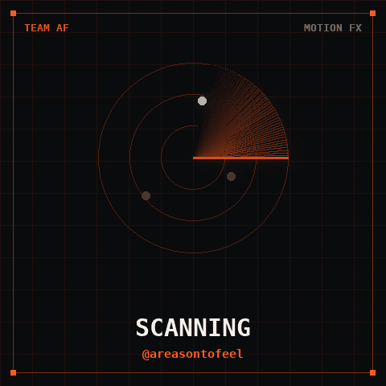

SRE · Bengaluru
I’m Karthik Kumar Reddy V, a Senior SRE at Visa in Bengaluru. Previously Myntra and Airbus. I work on Kubernetes, AWS, Terraform, and reliability.

Score a Kubernetes or Helm change against past incidents.
MiniLM embeddings, cosine ranking, a helm diff parser, and a public seed of 1,513 labeled cases.
Bring your own incident JSONL. No training required.
helm diff upgrade checkout ./chart -f values-prod.yaml \ | python -m changeradar score-diff
Runs MiniLM in the browser via Transformers.js. First load ~20MB, then local.
RCAEval, Cloud-OpsBench, AnoMod labels. Not production dumps.
Hit@k is lookalike ranking. Cosine is not P(outage).
A high score means “this looks like a known incident.” It does not mean the change will page in production.
A 45 minute 1:1 for people preparing SRE and DevOps interviews. Scenario questions on AWS, Linux, Kubernetes, and incidents. How to structure answers, how to talk about trade-offs, and the mistakes that get people rejected.
The Linux Foundation · Apr 2022
Amazon Web Services · Aug 2024
Senior SRE at Visa. Previously Myntra and Airbus, on AWS EKS platforms. I ship the tools I wish I had at 2am.
Hugging Face: karthikreddyv · GitHub: karthikvkreddy